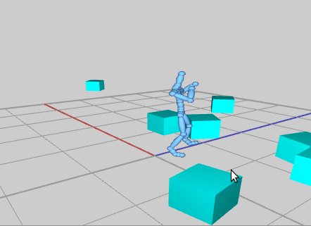
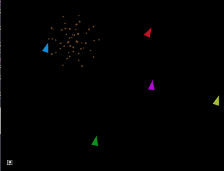
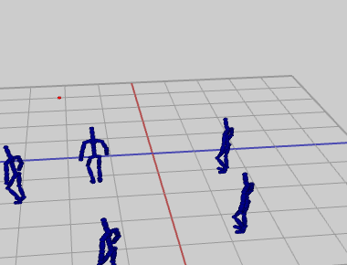

CS56 Computer Animation: Lab 10
In which, we play with physics and possibly choose our own adventure....
The goal of this lab is to
- gain hands-on experience using a physics engine
- explore additional topics of your choosing for extra credit!
Get the source
This assignment has been added to your AnimationFramework repository. To get the source, run
> cd cs56/AnimationToolkit
> git pull
> cd build
> cmake ..
> make
You should now have a new directory under assignments called
a10-physics.
Assignment 10: Use the force
Due December 12
Question 1: Computing forces and torques (5 points)
In this question, use Newton's equations of motion to compute the net force
and net torque for the following box. Show your calculations in your readme
for this week.
- The box has mass 10.0 and dimensions (100, 200, 100)
- The box starts at position (0,0,0)
- Each frame, we apply two forces. The forces and positions are given in the
box's local coordinate frame.
- a linear force of (0, 0, 10) applied at position (-50,0,-50)
- a linear force of (0, 0, 5) applied at position (50,0,-50)
To check your work, use ODE to simulate the box
and print out the forces and torques each frame. Verify that you get the same
result that you calculated in your readme. Use ABoxSim1 as a guide.
CAREFUL: don't forget to compare your answers against the simulated forces in
local coordinates!
To run the demo from the build directory, type
build> ../bin/a10-forces
Question 2: Unstoppable!! (10 points)
In this question, you will implement a character that can interact with a
physically-simulated wall. This demo will require defining both kinematic and
dynamic objects in the ODE physics engine. The character will consist of
kinematic objects and the wall will consist of dynamic objects.
Use the code in ABoxSim3 as an example.
Helpful Reference: Open Dynamics Engine (ODE) Reference Manual

To run the demo from the build directory, type
build> ../bin/a10-unstoppable
Controls
- Press spacebar to reset the simulation
- Press 'd' to toggle the display to show either the character or physics objects
-
Features
- Create a wall of bricks. The wall width should be at least 200 and height should be 200. Place the wall so it is perpendicular to the +Z axis, with its base centered at position (0,0,100). Each brick should be dynamically simulated
- Each brick should have dimensions (50, 50, 50) and mass 50.
- Create a rigid body for each brick using dBodyCreate()
- Create a collision object for each brick using dCreateBox()
- For each joint of the skeleton, create a kinematically simulated sphere. Each
sphere should have radius 2 and total mass equal to 5.
- Create a rigid body for the sphere using dBodyCreate
- Set the rigid body to be kinematic using dBodySetKinematic
- Create a collision object for the sphere using dCreateSphere
- Each frame, update the position of the spheres based on the global positions of each joint
- Draw the boxes and spheres simulated by your program
BONUS: Fireworks (5 points)
In this question, you will implement fireworks using particle systems.
Implement your solution in assignments/a10-physics/fireworks.cpp

To run the demo from the build directory, type
build> ../bin/a10-fireworks
For this demo, implement a rocket that explodes into
fireworks when the user presses the space bar.
Each firework should contain two particle systems: one which
represents the rocket and one which represents the the exploded firework.
Fireworks go through three stages: ROCKET, EXPLODE, DONE.
- ROCKET: a rocket particle should be initialized with a randomized start
velocity and "time to live". When the rocket's time to live expires, the firework
switches to mode EXPLODE.
- EXPLODE: N sparks are initialized at the current location of the rocket
with randomized velocities extending in a circle arond the start position.
Each particle should get a "time to live". When all firework particles have
exceeded their time to live, the firework switches to mode DONE
- DONE: The firework is no longer updated or drawn and is available for re-launch
by the user.
Features
- Particles should contain
- mass, velocity, position, color, time to live, transparency, and size
- derivatives for position and velocity
- accumilated forces
- In update, compute the derivative and update each particle's state. Additionally, decrement ttl by the delta time.
- Create a new rocket when the user presses spacebar
- When a particle expires, it should either be deleted or recycled as part of an object pool.
- Randomize the properties of the particles.
- Define at least one external force to act on the particles (e.g. gravity)
- Visualize the rocket with a cone. The cone should face the direction that the
particle is moving.
BONUS: Behave! (10 points)
In this question, you will animate a simple crowd using boid behaviors.
Implement your behaviors in assignments/a10-physics/ABehaviors.cpp
Animate a character using your WASD controller in
assignments/a10-physics/ASteerable.cpp
To run the demo from the build directory, type
build> ../bin/a10-behaviors

This demo requires you to have a placeholder character
drawn as a sphere.
Implement the steering behaviors in ABehaviors.cpp. The basecode
provides a UI for tweaking parameters and for environment
Features
- Implement AFlee:calculateDesiredVelocity
- Implement AArrival:calculateDesiredVelocity
- Implement ADeparture:calculateDesiredVelocity
- Implement ASeparation:calculateDesiredVelocity
- Implement ACohesion:calculateDesiredVelocity
- Implement AAlignment:calculateDesiredVelocity
- Implement AFlocking:calculateDesiredVelocity
- Implement ALeader:calculateDesiredVelocity
- Port your WASD controller to ASteerable to create a humanoid character
Submission Requirements